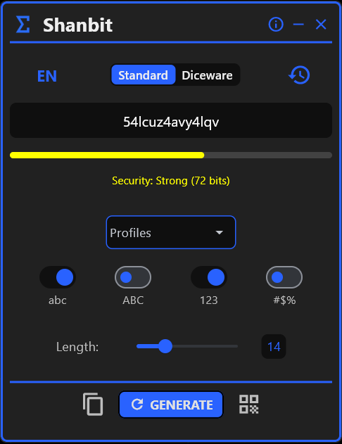
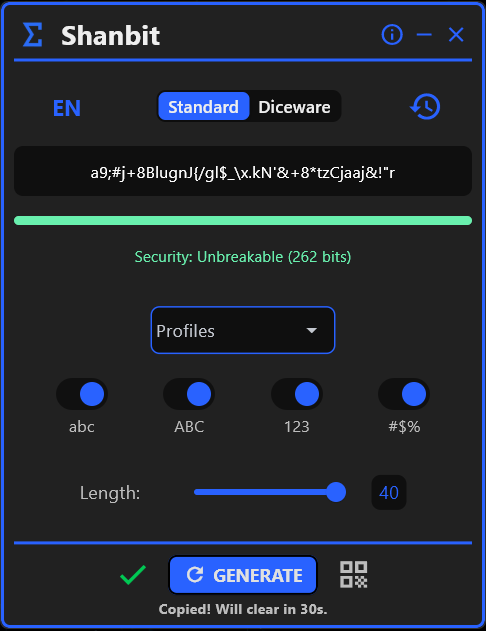
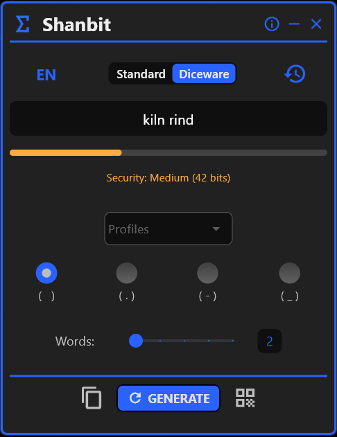
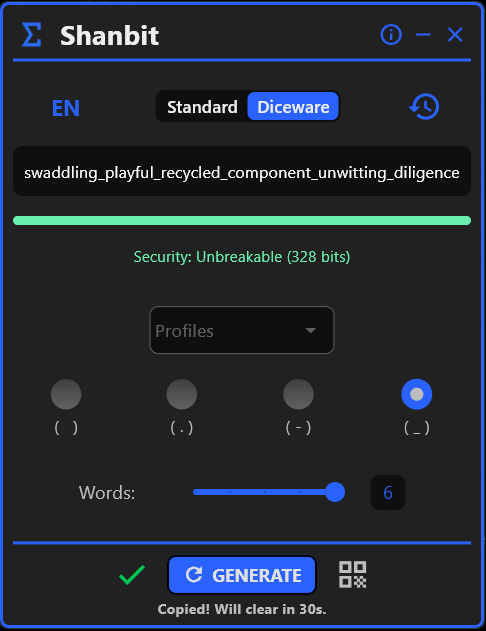
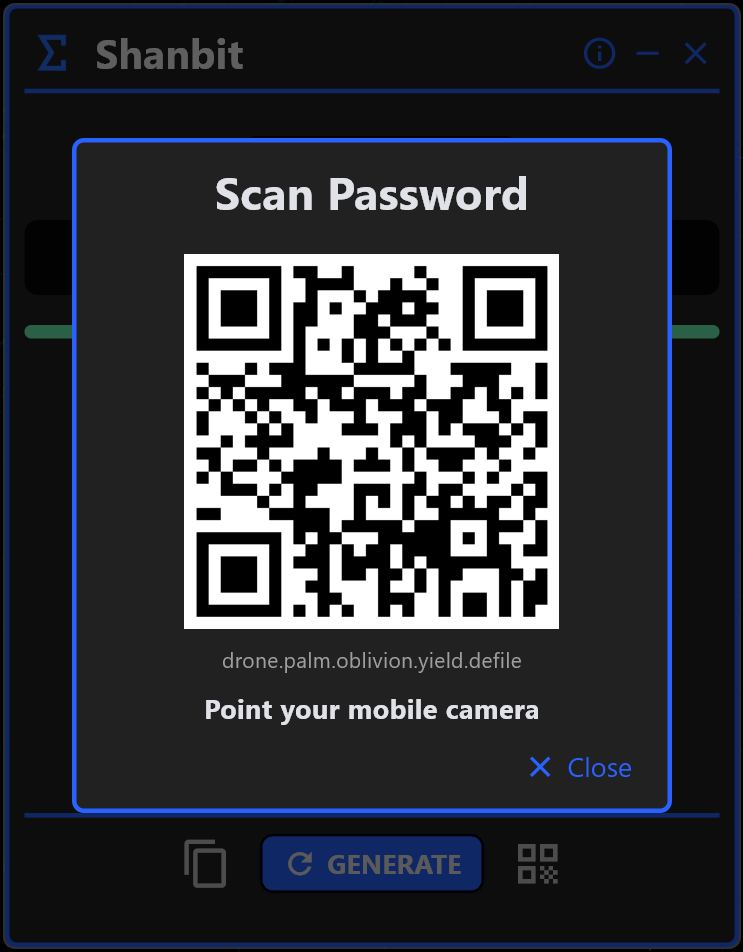
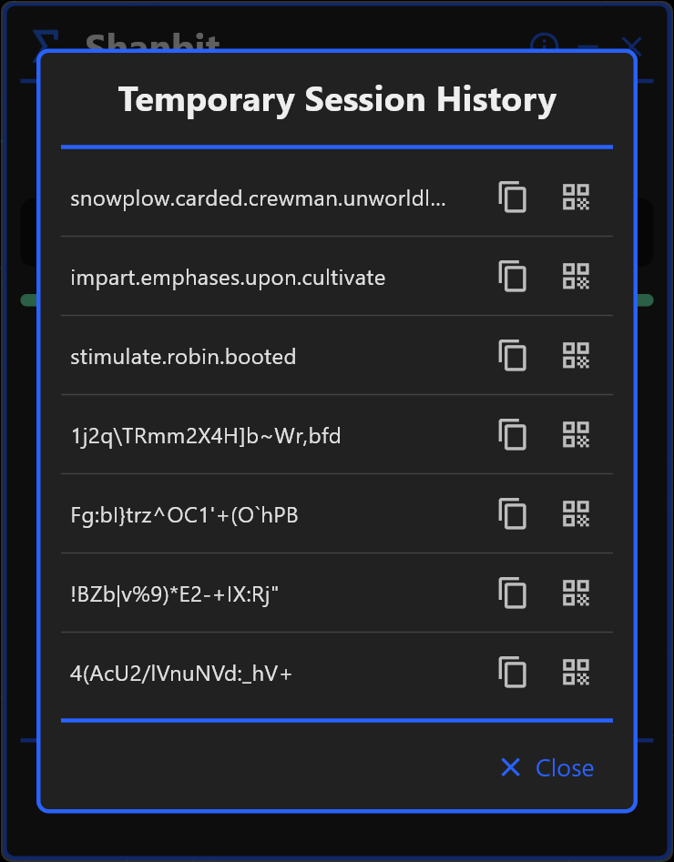

Why Shanbit Is the Most Secure Random Password Generator
Most password generators make security claims without evidence. Shanbit exposes the math so you can verify every claim yourself.
What Does "Strong Password" Actually Mean?
Every password generator claims to produce a strong password. Shanbit is the only offline tool that lets you verify strength using the cryptographic standard: Shannon Entropy, measured in bits.
E = entropy bits · L = password length · R = character pool size
| Password Type | Length | Entropy (bits) | Rating |
|---|---|---|---|
| Digits only | 4 chars | 13 bits | Weak |
| Lowercase letters | 10 chars | 47 bits | Moderate |
| Mixed case + numbers | 12 chars | 71 bits | Strong |
| Full pool (Mixed case + numbers + symbols) | 16 chars | 104 bits | Unbreakable |
| Full pool (Mixed case + numbers + symbols) | 40 chars | 262 bits | Unbreakable |
| Diceware passphrase | 6 words | 328 bits | Unbreakable |
Entropy above 100 bits is computationally infeasible to crack with current or near-future hardware, including GPU clusters.
Why Free Online Password Generators Put Your Data at Risk
When a web-based password generator claims to use "cryptographic randomness," you have no way to verify that claim. The JavaScript in your browser could be using Math.random() — a non-cryptographic PRNG — instead of crypto.getRandomValues(). You cannot inspect server-side logic. You cannot confirm your random password was not logged.
Shanbit's random password generator uses Python's secrets module, which wraps CryptGenRandom on Windows — the same OS-level entropy source used by TLS certificate generation. The strong password Shanbit produces is verifiably random.
Every web-based password generator also leaves forensic traces: browser cache, browser history, ISP network logs, and potentially server access logs. Shanbit leaves none — because there is no network stack involved.
Random Password Generator vs. Passphrase Generator — Which to Use?
A random password (e.g., kR#7mZ@qL2!x) packs maximum entropy into minimum characters. Ideal for credential managers where you never type the password manually.
A passphrase generated via Diceware (e.g., correct-horse-battery-staple-lamp) sacrifices character density for human memorability. A 6-word passphrase provides ~328 bits of entropy — equivalent to a 56-character fully-random strong password — but possible to recall without writing it down.
Shanbit's passphrase generator supports English and Spanish wordlists. Each word is selected by secrets.choice — statistically independent from all previous selections. This is the technical difference between a real passphrase generator and a tool that samples adjacent dictionary entries.
How This Random Password Generator Protects Your Privacy
Each feature of this random password generator closes a specific attack vector.
1. Strong Password Generator (CSPRNG + Entropy)
Every random password is generated via Python's secrets module (OS-level CSPRNG). The real-time entropy meter applies E = L × log₂(R) to display your exact bit-strength before you use the password.
- • Chromatic feedback: Weak / Moderate / Strong / Unbreakable (>100 bits)
- • Granular character pool control: symbols, numbers, case
- • No minimum length imposed — entropy meter guides you


2. Passphrase Generator (Diceware)
The built-in passphrase generator uses the Diceware standard with curated English and Spanish wordlists. Each word is selected by secrets.choice — CSPRNG-backed, statistically independent.
- • 6-word passphrase ≈ 328 bits entropy
- • English and Spanish wordlists available
- • Same CSPRNG core as the random password generator


3. Offline QR Transfer
Transfer your random password or passphrase to a smartphone using only light. No Wi-Fi, Bluetooth, USB, or NFC. The QR payload is a volatile Base64 string rendered in RAM — never written to disk.
- • Scan with any standard camera app — no companion app required
- • Payload destroyed when the password generator window closes
- • No network protocol involved at any point

4. Thread-Level RAM Management
Shanbit manages volatile memory across every operation. Password history stays in RAM only. A background thread clears the clipboard. On exit, all session data is wiped — no SQLite, no registry entries, no temp files.
- • Zero forensic footprint on disk
- • Clipboard auto-cleared (Will clear in 30s) — no clipboard manager recovery
- • Process isolation: no persistent logs at OS level

How to Generate a Secure Random Password with Shanbit
Five steps. Under two minutes. No internet required at any point.
Download from the Microsoft Store
Installs on Windows 10 and Windows 11. Self-contained binary — no internet required after installation.
Select Mode: Random Password or Passphrase
Choose the CSPRNG character-based random password generator or the Diceware passphrase generator. Both use the same cryptographic core.
Configure Complexity, Verify Entropy
Enable uppercase, lowercase, numbers, and symbols. The entropy meter shows exact bit-strength in real time. Target >100 bits for an Unbreakable strong password.
Copy or Transfer via QR Code
Clipboard is auto-cleared after use (Will clear in 30s). Or scan the in-memory QR to transfer the random password to your phone with zero network involvement.
Close the App — Everything Is Wiped
All session data in volatile RAM is permanently destroyed. Zero forensic evidence remains on your Windows device.
Random Password Generator — Frequently Asked Questions
Why should I use a random password generator that works offline?
Web-based tools route your generated password through remote infrastructure, creating network-level, server-level, and browser-level exposure. A random password generator that is 100% offline eliminates all three simultaneously. Shanbit additionally avoids clipboard persistence and browser history — attack surfaces no online password generator can address by design.
How does Shanbit work as a strong password generator?
Shanbit uses Python's secrets module (OS-level CSPRNG) to generate each character in your random password. It then applies Shannon Entropy — E = L × log₂(R) — to calculate verifiable bit-strength. A strong password above 100 bits is computationally infeasible to crack with modern or near-future hardware.
Does Shanbit include a passphrase generator?
Yes. The passphrase generator uses the Diceware method with curated English and Spanish wordlists. Every word is selected by secrets.choice (CSPRNG) — statistically independent from all previous selections. A 6-word passphrase provides ~328 bits of entropy.
What is the difference between a random password and a passphrase?
A random password maximizes entropy per character using the full symbol pool. A passphrase trades character density for human memorability — a 6-word Diceware passphrase reaches ~328 bits while remaining possible to memorize. Use passwords for credential managers; use passphrases for credentials you must type from memory. Shanbit's password generator supports both.
Is this the most secure privacy tool for Windows?
Shanbit is a dedicated privacy tool with a strict RAM-only policy. No other Windows password generator combines CSPRNG entropy, verifiable Shannon bit-strength, Diceware passphrase generator, in-memory QR transfer, and thread-level clipboard wiping — with zero network dependencies.
How does the offline QR transfer work?
Shanbit renders your random password or passphrase as a QR code from a volatile Base64 string built entirely in RAM. Scan with your phone camera — no companion app required. The payload is never written to disk and is destroyed when the window closes.
Developed by PyBloSoft
PyBloSoft is an independent company that builds software for Windows. Every design decision in Shanbit — CSPRNG over standard PRNG, thread-level clipboard wiping, Diceware for the passphrase generator, RAM-only history — This reflects direct expertise in Windows systems programming. We ship tools we use ourselves.
No telemetry. No analytics. No cloud. Our random password generator philosophy: if your data can leave the device, the tool has already failed its primary purpose.
The fundamental difference
"Free online password generators optimize for traffic.
Shanbit optimizes for privacy."
Every free online random password generator needs you to visit its page. That visit is the product. Your traffic, your behavioral pattern — all monetizable. Shanbit has no traffic model. No ads. No analytics. The only thing it does is generate a cryptographically secure strong password or passphrase on your local machine, then forget it ever happened.
If that sounds like the privacy tool you have been looking for, it is available now on the Microsoft Store for Windows 10 and Windows 11.

Note: The app's user interface is currently available in English and Spanish.